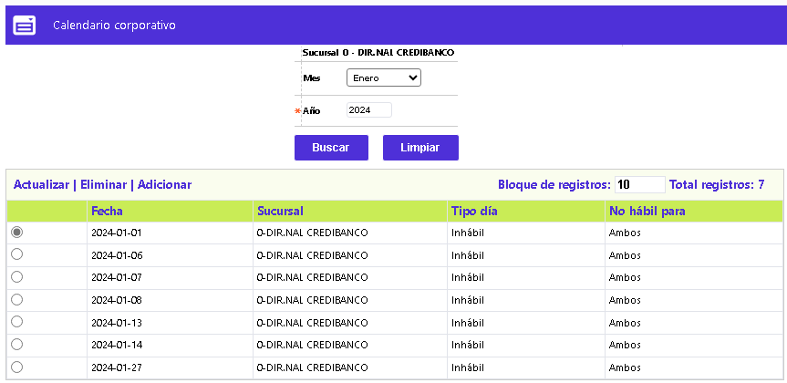
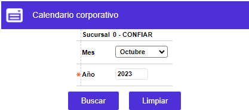
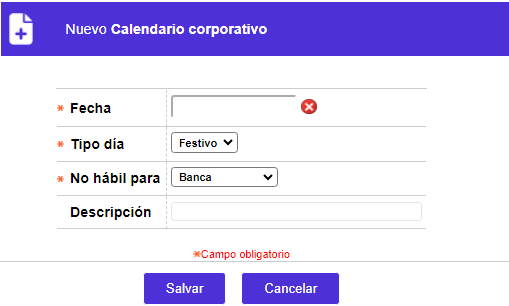

Calendario
Mediante las opciones corporativa y de la entidad, se permite definir cuáles fechas no son hábiles para la atención al público o el procesamiento de movimiento transaccional, en la entidad financiera. Al momento de realizarse la instalación del aplicativo, se debe actualizar la información relativa tanto a los días festivos nacionales, como a los días no hábiles comunes para todas las entidades financieras de la instalación.
Los días no hábiles de una oficina o sucursal se ingresan por la opción Calendario sucursal.
El formulario contiene las opciones Actualizar, Eliminar, y Adicionar. Adicionalmente, cuenta con un filtro de búsqueda.

Filtro: Se pueden realizar consultas a través de las siguientes opciones:

|
Sucursal |
Código y nombre de la oficina que aglutina a las demás sucursales o dependencias de la entidad o la empresa a la que ingresó el usuario. Estos datos son informativos no modificables. |
|
Mes |
Campo que posee lista de valores tipo combo, no obligatorio, en el que se selecciona el mes del año, para el que se desea consultar, eliminar o modificar la data correspondiente. |
|
Año |
Campo obligatorio en el que se debe ingresar el año para el que se desea consultar, eliminar o modificar la data correspondiente. |
Adicionar: Si el usuario invoca la opción Adicionar se despliega un formulario con los siguientes campos:

|
Fecha |
Campo obligatorio, en el que, mediante un calendario, se debe seleccionar la fecha para la cual se requiere definir el Tipo día. |
|
Tipo de día |
Campo obligatorio que, mediante una lista de valores tipo combo, de la que se debe optar entre Festivo o Inhábil, la naturaleza del mismo. |
|
No hábil para |
Campo obligatorio que, mediante una lista de valores tipo combo, de la que se debe optar entre Banca, Procesamiento o Ambas, la primera se relaciona con atención al público, la segunda si la inhabilidad es para proceso de movimiento y la última para ambas situaciones. |
|
Descripción |
Campo alfanumérico de 30 posiciones, no obligatorio, dentro del que es posible mencionar el motivo o la razón por la cual un día específico no es laborable o es festivo. |
Actualizar: Si el usuario invoca la opción Actualizar, se despliega un nuevo formulario en el cual los únicos campos modificables son: Tipo día, No hábil para y Descripción.